k-Day 065｜偉大的靈魂
早上六點起床，太陽已經這麼高了。
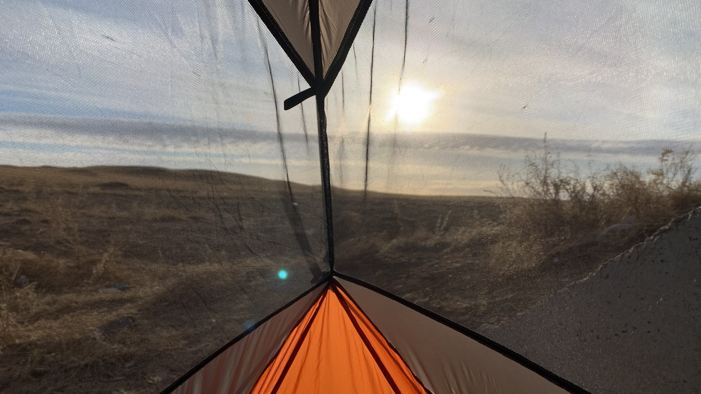
蛋殼睡墊的第一晚，睡得有點憋。今天順風，想試試看能不能盡量騎遠一點。終究是想想，收拾帳篷吃了早餐，已經七點了。
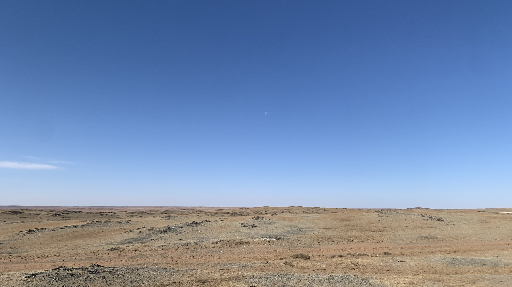
今天的地貌和昨天有些不同，紅色的土上覆蓋低矮的草，露出岩石的邊緣。
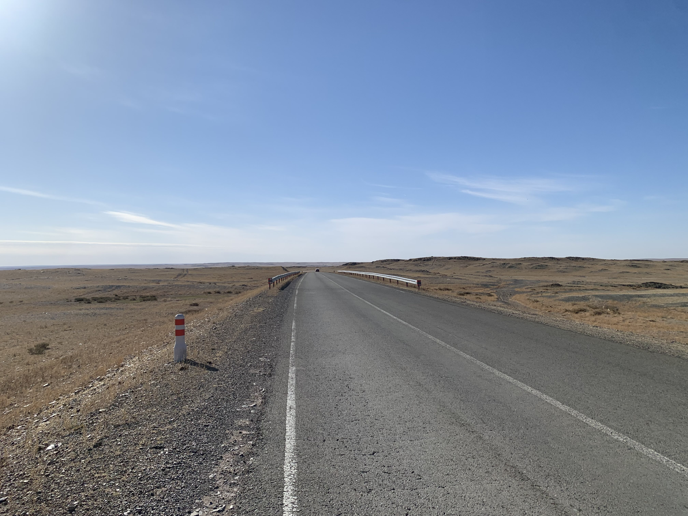
一樣大的太陽，越來越感到口渴，水的消耗量比想像中大。
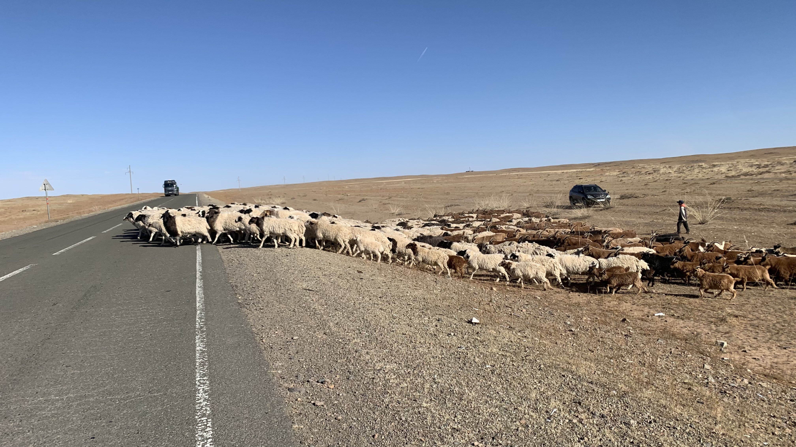
出發沒多久，看到傳說中的羊咩咩過馬路。羊群後方有一位穿著連帽外套的小朋友正在引導羊群方向。道路後方的卡車逼近時不斷大聲按喇叭恐嚇羊群，其中一隻跑得較慢的羊衝進司機下方的視線死角差點被撞到。趕羊的小孩驚恐地大叫一聲，小羊迅速從車輪邊鑽過。祝福這位司機下輩子投胎成為豆瓣醬，一生一世輔佐羊肉。
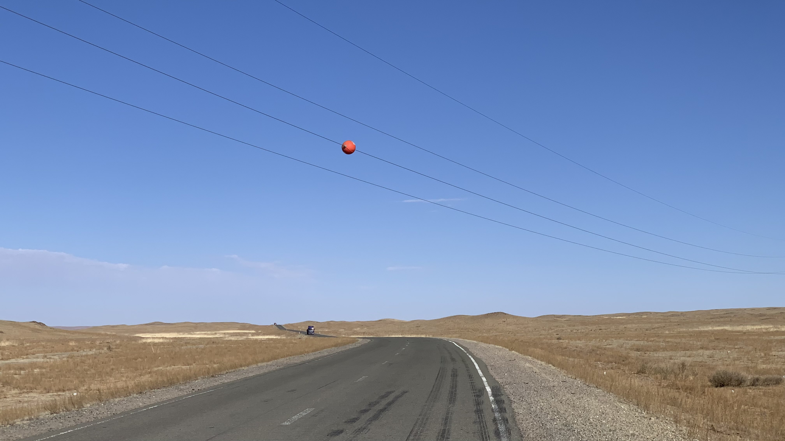
山坡仍是起伏的，但是已經感覺不到內蒙那種拉麵的波浪弧度，屬於較為硬派的線條。
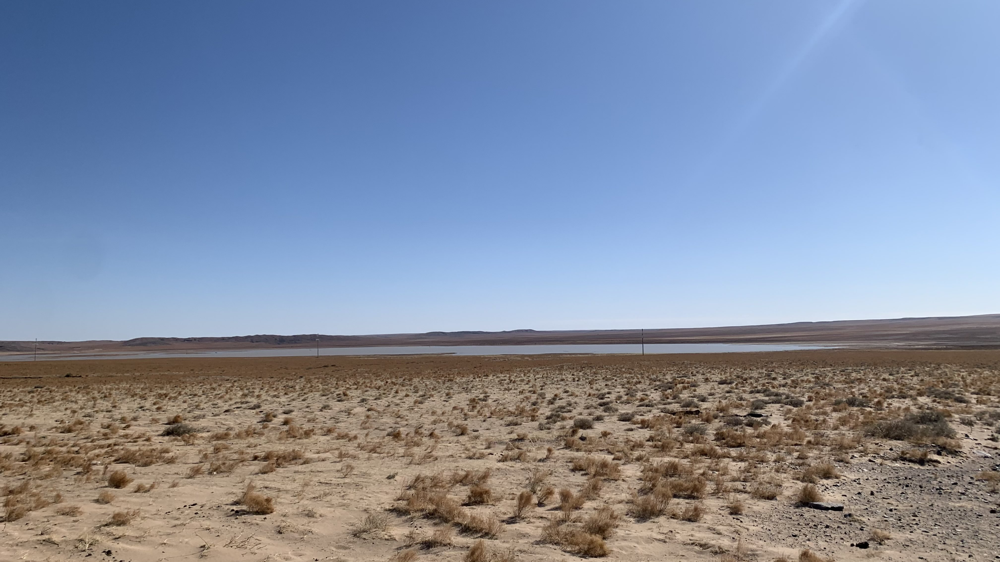
雖說是戈壁，但我眼前出現一個不小的水塘，裡面甚至有兩隻鴨子類的生物在游泳。
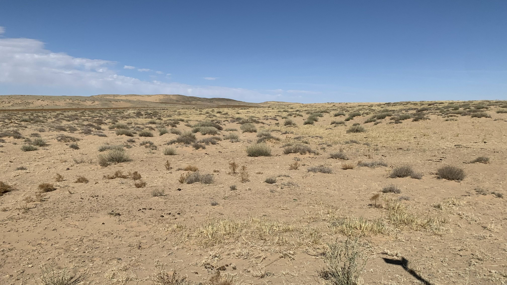
紅土轉為沙地，植物也從地表上的小草變成一叢一叢的枯黃草團。
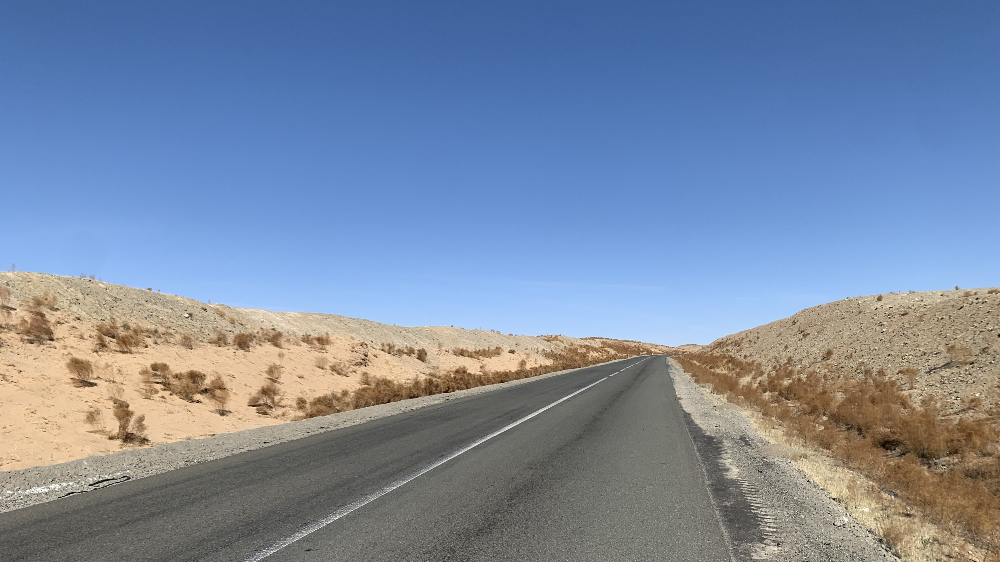
在這裡騎車完全沒有抱怨，景色是從來沒見過的。卡車司機在經過我時分成兩派，有些會緩慢地在我後面等待，直到對象車經過才超過我，另一派則是輕按兩下喇叭，在我轉到路肩時才超車。
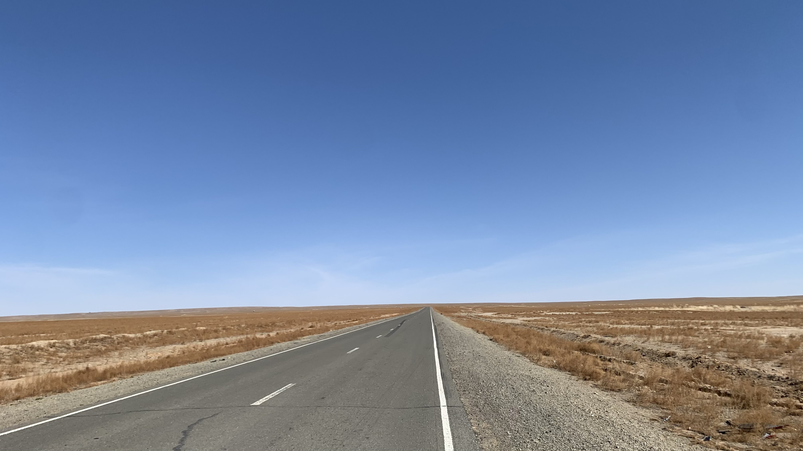
畢竟是第二天，還維持著大量新鮮感，聽說這樣長長的路，在十天後會使人懷疑自己沒有移動過。
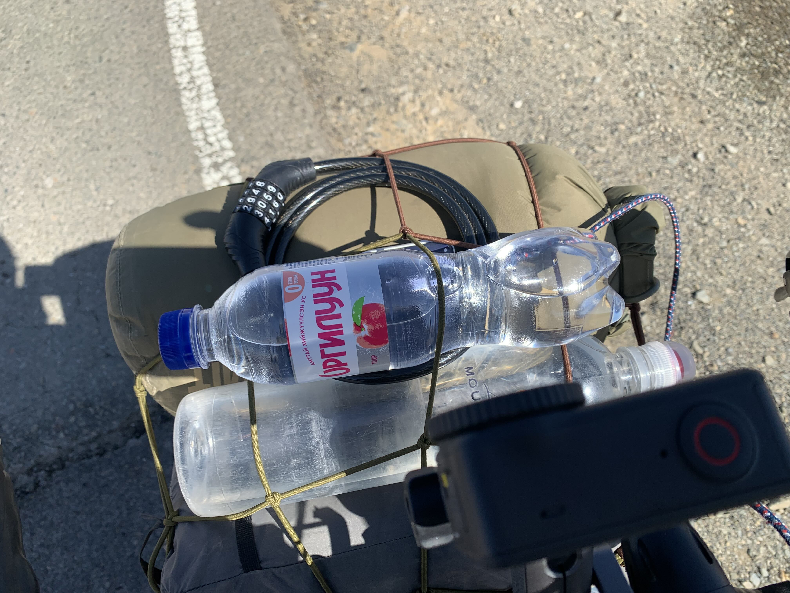
又有一輛白色轎車對我招手，車子停到前面路肩後，有個年輕人拿著蘋果味氣泡水給我。同樣是拿了水就跑回車上，同樣地我在後方對著駛離的車子揮手致謝。
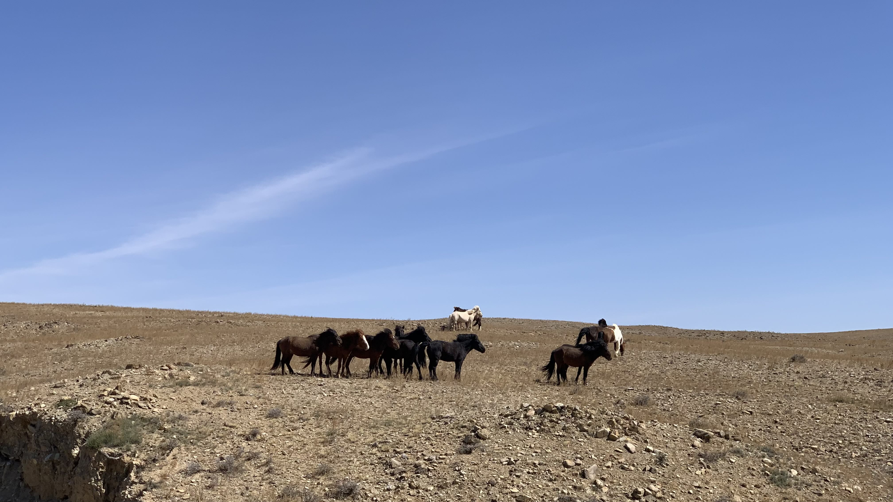
草坡上經常有馬群、牛群和羊群，路邊也有不少白骨、屍體，以及風化的毛皮。沒有拍下那些死去的動物，抱著獵奇的心態用鏡頭拍照，感覺對他們曾經活過的生命不怎麼尊重。
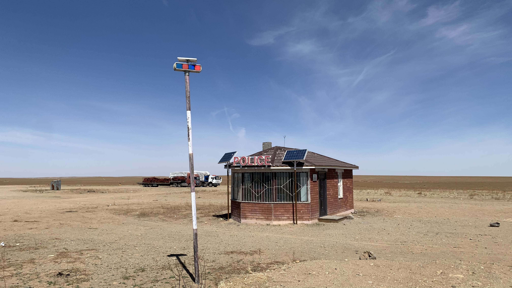
進度很快，11點就已經騎了五十公里，來到卡車司機休息的岔路空地。此處往西北可以直通目的地，往東北則會經過兩個城。今日吹東南風，如果努力一點說不定可以提早抵達下一個城市，但是躲在警察站牆後避風時，腦中浮現賽罕高畢休息站大叔的話；「你研究人類精神，不跟人說話？」因此決定右轉往一個叫做Erdene的城鎮前進。
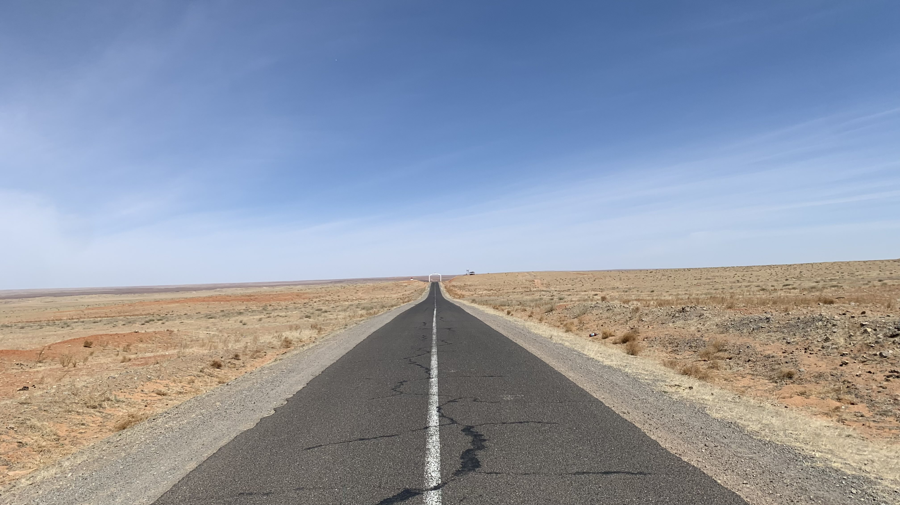
進城前大概有十公里的下坡，相當壯觀。
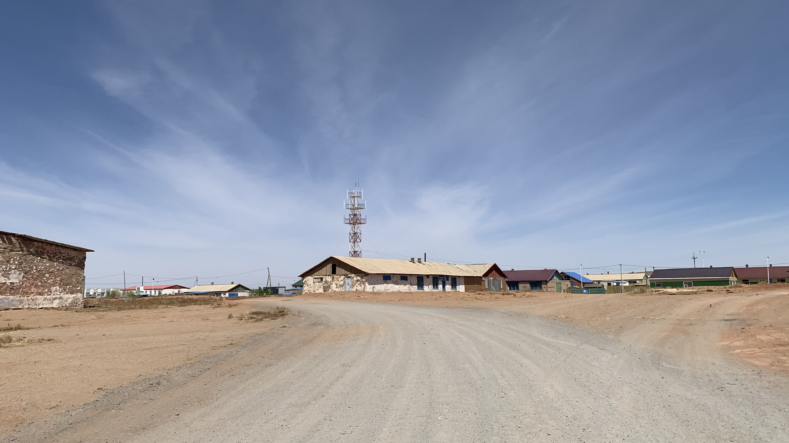
抵達市鎮後突然變成這樣的土路，或許不該說是路，四面八方只要是有土地的地方都能行走，沒有必然的軌跡。
四處張望，找不到像是餐廳的地方，肚子已經很餓了，只好坐在公園喝一瓶蛋白飲發呆。
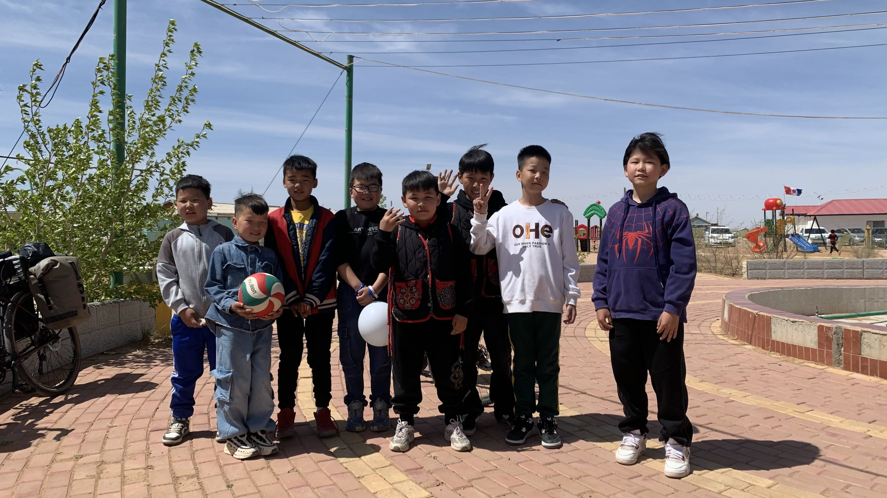
一開始是最左邊的三位小孩在公園發現我的。沒想到呼朋引伴，整個班級的人似乎都過來了。右邊兩位小朋友先用英文跟我打招呼，後來每個人都開始說起流利的英文。
大家自我介紹一輪之後，白衣服小朋友問我要去哪裡？我說：「烏蘭巴托。」他又問：「你是哪裡人？」「台灣。」我說。
顯然他們沒有學過這個單字，大家茫然了一下。
我問他們那裡有餐廳或吃的呢？他們似乎聽懂了，討論了一下，往我後方的某處指。說完謝謝和再見後騎著車離開。雖說鄉村的感覺，然而這裡的路況幾乎是搓衣板上灑了大量洗衣粉的狀態。二十三號的零件不斷發出悲鳴，更慘的是在小小的村莊裡繞了五分鐘還是找不到商店或餐廳。
肚子越來越餓，雙腿開始發軟，此時聽到後方有人大喊。回頭一看，白衣服小朋友騎著他的自行車找到我，跟我說他要帶我去買吃的。
第一次沒聽懂，我露出疑惑的表情。小朋友問我：「你要食物對嗎？」比出吃飯的手勢。我立刻點頭。
「跟我走。」他果斷地說。話一說完立刻牽車調頭往公園的方向騎。
小心謹慎地跟在他後面，他並沒有沿著土地上的輪胎印騎，而是上上下下，走出自己的軌跡。看著他騎車的背影，我很想幫他拍照，但是沒有這麼做。總有一種感覺，如果我拿起手機，他特地來帶我找食物而發生的眼前的瞬間就會消失。
實際上並沒有所謂的路，只好集中意識，盯著他的動向，同時尋找二十三號能落腳的軌跡，就這樣，土地上又壓出兩條不一樣的胎痕，回到剛剛的公園。他指了指公園旁一間低矮的建築，示意要我跟他進去。
這裡的商店門口做得相當隱密，可能因為沒有所謂的道路或正確方向，也就沒有朝著最顯眼的地方開口的必要？
為了感謝他特地帶我找到食物和水源，我跟他說選一個你喜歡的吧。他拿了一個架上的果汁，後面跟來了兩個他的小夥伴，就說：「你們也選一個吧。」結帳時他看我從包包掏錢，突然說他不要了。我說我是想感謝你帶我來這才請你選一個的，然而白衣服小朋友心意已決，堅持不拿。我看了他的眼神，付了另外兩個小朋友的果汁錢。自己買了一瓶可樂和一塊蛋糕，看到桌上有飯卷，又拿了一條。
走出店外看到他們都還在，我有些不好意思，跟白衣服小朋友說：「我只是想謝謝你。」他搖搖頭。
我看著他，伸出拳頭，他也伸出小拳頭碰了一下。
此時我有點無法自處，因此選擇了自己覺得小孩也能懂的話和他說：「你真酷。」
旁邊的小孩笑著對他說：「他說你很酷。」白衣服小孩沒說話，臉上也沒有特別的表情。我還是看著他。
跟大家說了再見繼續往道路的方向騎，又在村里迷路。突然又有人從後方叫住我，白衣服小孩從遠處騎著他的自行車趕到我面前，停下車後他問我：「你叫什麼名字？」此刻身為已經腐朽的大人，突然被眼前這位正直的小孩感動。和他說了名字後，他在嘴裡重複了一次。我用蒙語和他說了再見，揮揮手道別後，又迷路了。
怎麼就繞不出去呢？四面八方都是沙地，車輪不斷打滑又陷進去。剛剛才帥氣揮手，難不成又要繞回去那個公園？不認命地在土路上亂騎，大約15分鐘後終於有離開村莊的跡象。
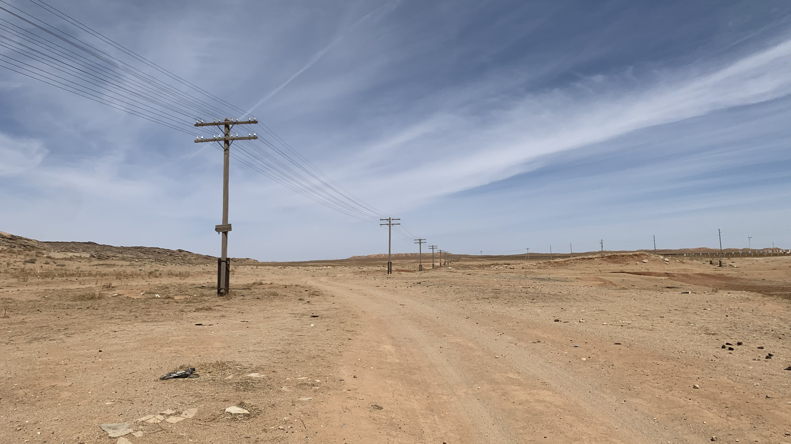
？？？
這路況？
看到圍牆邊有個西部牛仔打扮的白髮白鬍子老人興味盎然地看著我，硬著頭皮和他打了招呼，掏出手機指著地圖問他要往賽音山達是哪個方向？老人用手遮住強烈的陽光，低頭湊近螢幕，只看了一眼，用大拇指往這土路的方向一指，說「go。」
我不確定他是不是真的說了英文，但那硬漢風格的大拇哥和堅定的語氣告訴我這條路不妙，立刻回頭找到對面另一戶人家。詢問了正在燒火的年輕人，他告訴我這條路必須開車才能走，我的自行車走不了，必須原路返回剛剛進村前的岔路才能騎到賽音山達。
說完他又問：「我帶你過去？」謝過之後又跟在他的摩托車後面跑，沒多久二十三號的後輪就整個陷進沙地，只好牽著車快步追趕。
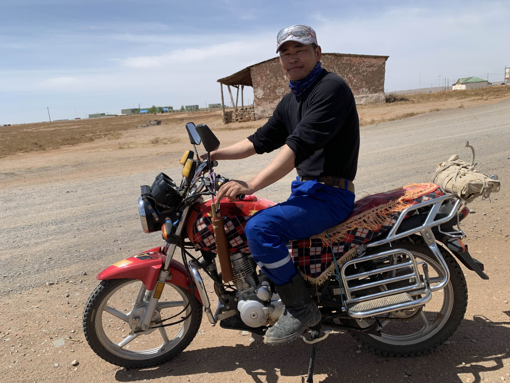
回到早上進村的岔路，跟他說可以拍張照嗎？他馬上擺出了帥氣的姿勢。進村一小時打擾了一名11歲小孩和一位目測二十多歲的年輕人，真是有點不好意思。
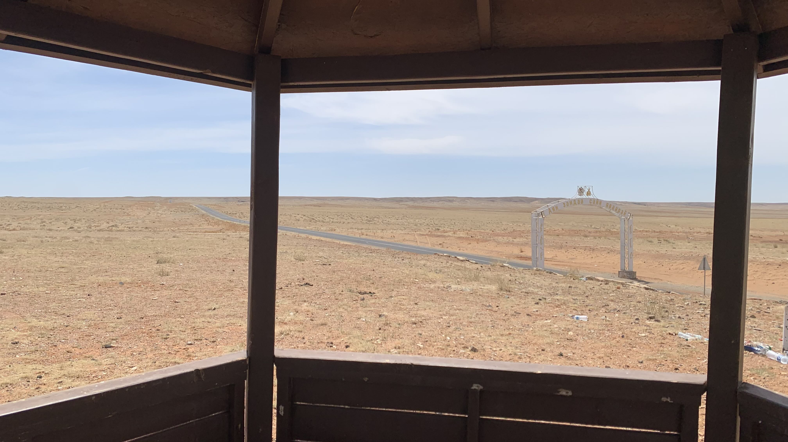
這種抱歉打擾了的心情並沒有維持太久，主要還是意識到自己剛才可是滑了十幾公里的下坡進村的，這代表現在要頂著逆風重新往回爬15公里。
爬到一半絕望了，又熱又渴又餓。
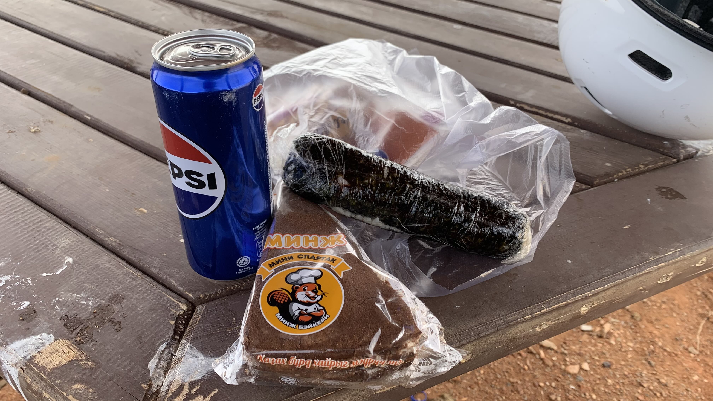
走到鎮外的涼亭坐下，看著剛剛買的晚餐，怎麼會覺得這些東西足夠呢？
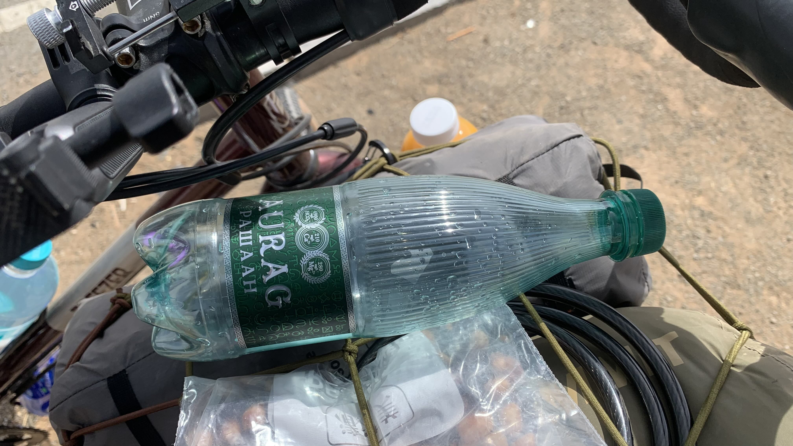
下午一點氣溫已經上升到24度，直到兩點多才回到原本的岔路。短短十五公里，已經喝掉昨天獲得的500毫升氣泡水。依然口乾舌燥。突然有點擔心明天的飲水，氣象顯示會刮大風，也許還要露宿一晚，車上的水只剩4公升，外加一瓶百事可樂。難道今天就必須喝掉芒果汁嗎？
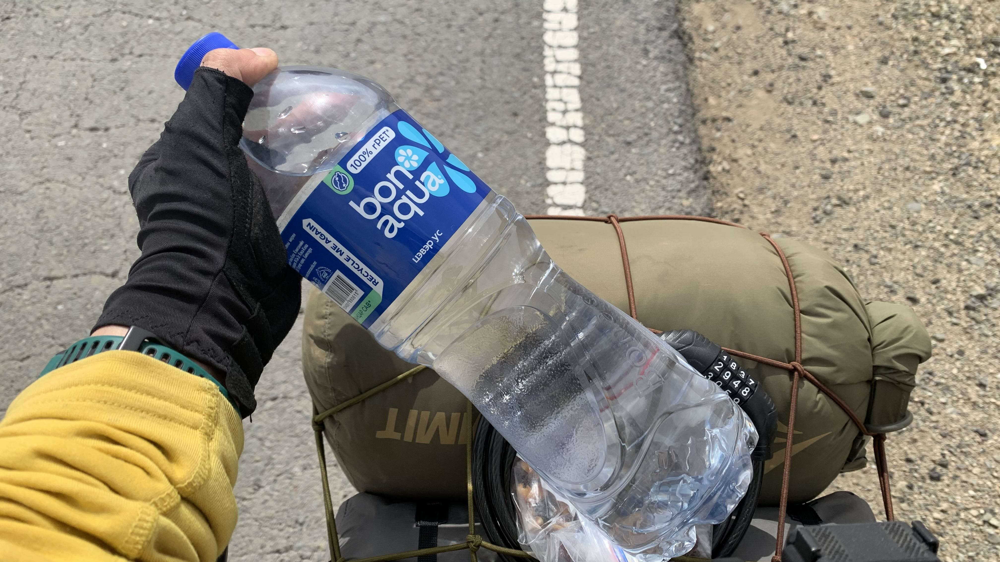
正當我一邊擔心，一邊低頭騎著車，斜後方突然傳來吆喝聲，旁邊一輛白色轎車伸出友誼之手，那隻手上拿的是1.5公升的大瓶水啊啊啊啊啊啊啊。我激動地大喊謝謝，伸手接過救命水源。車裡的人們一邊歡呼一邊大喊「good luck !」就這麼加速離開。
在蒙古騎車很有趣，不時出現的補水車和加油的喇叭聲讓我感覺自己像是在騎環法賽的選手。大部分的人會搖下車窗揮手，有些人默默遞水，還有人特地停在路肩下車把水給我。真的很感謝，光靠我第一天帶的水，可能今天就渴到懷疑人生了。送水的人大部分沒有多聊的意思，每個人都是在我拿了水之後就加速離開。每次都在他們車子後方舉高右手大力揮舞著，大喊幾聲謝謝！
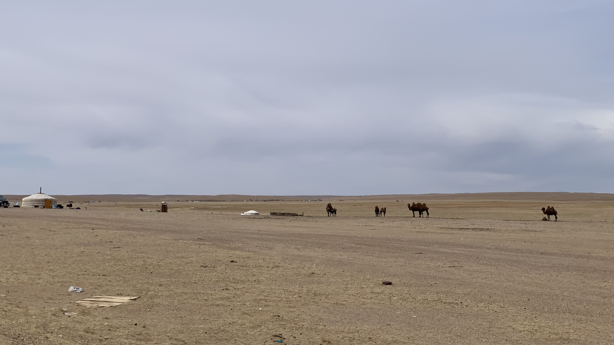
庫存水量變多後，心情也放鬆許多，路邊經過幾隻駱駝。昨天看到遠處的他們，一直以為是石頭。
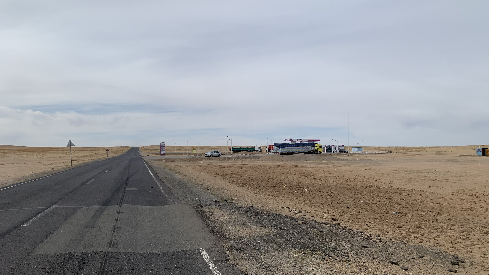
下午四點終於看到加油站，趕快跑到建築物下遮陽。
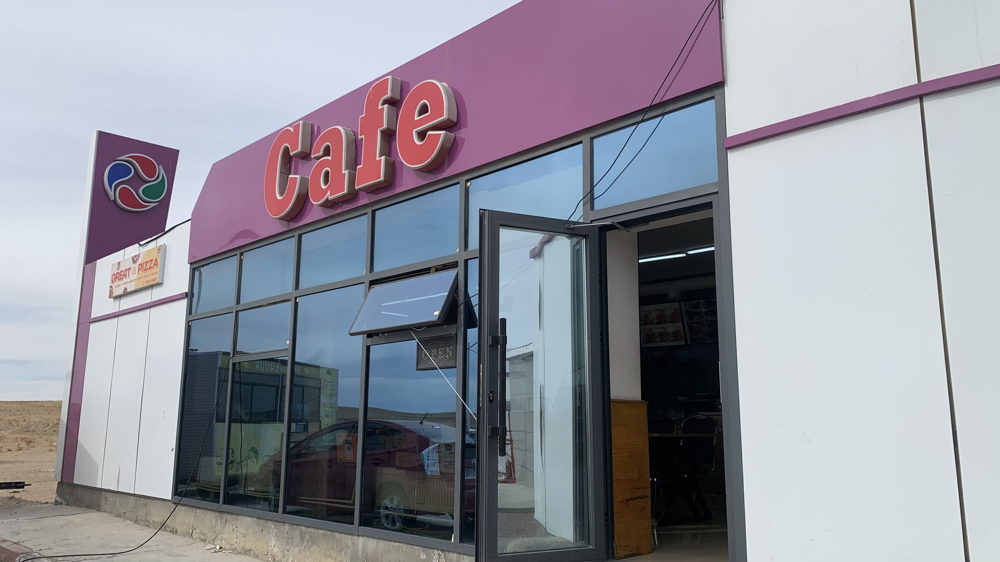
沒想到旁邊有間寫著cafe的餐廳！餓到發軟的身體找到綠洲，直接放了車就跑進去。
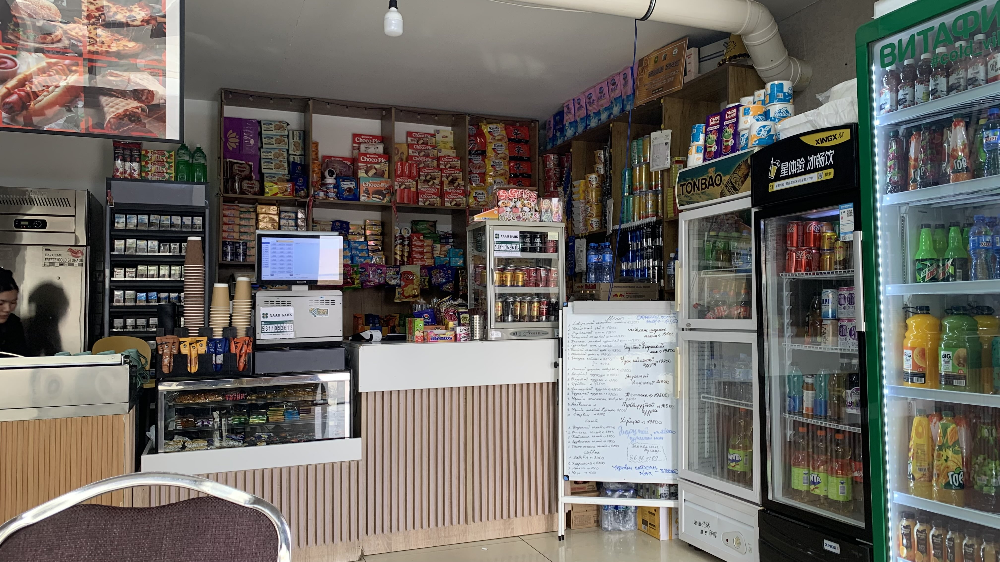
看不懂菜單，直接跟老闆說我要肉、飯和麵。
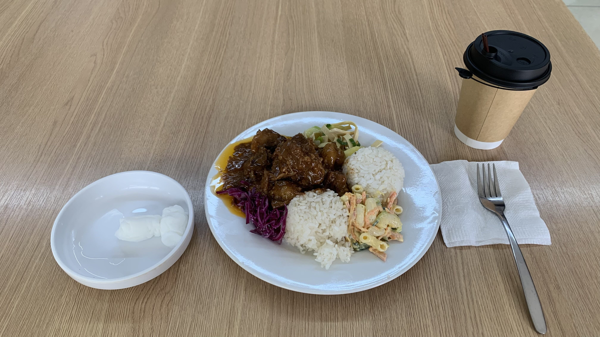
於是獲得這盤美味晚餐。
又點了一杯咖啡，問老闆可否讓我在餐廳後面過一夜，老闆面無表情停了幾秒，點了頭後就去招呼其他客人。
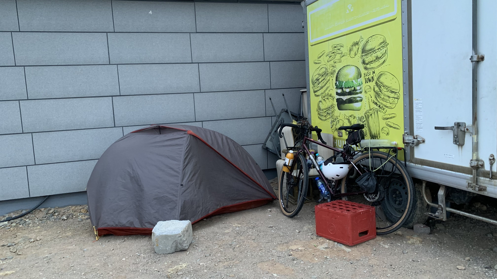
跟著白衣服小孩騎車時，看著他的眼神時，我一直想到蕭峰。正直、自持，願意給予幫助又節制地不擴張自己邊界。沒有過多表情，但又特地跑來問我的名字。在每個瞬間都自然地行動於當下，一面接納你，同時又維持了彼此間的距離。
蒙古人和媒體傳播的刻板印象有很大的不同。我會記住每個瞬間。
後記：
今天在一個小小的鎮上失去前進的方向，讓我意識到沒有「路」的時候自己會突然失去前進的勇氣。魯迅說：「其實地上本沒有路，走的人多了，也便成了路。」但是這些軌跡並沒有成為道路。在我聚精會神盯著蕭峰小朋友的背影前進時，連前進這個詞都不對了。他沒有按照地上的車輪壓痕移動，而是在高低不平的土地上用自己的判斷選擇下一秒車輪的轉向，即便是跟著他的我，也必須同時評估他的動態、眼前10公分左右的地形，選擇適合二十三號移動的下一個點。前人走過的路不是他選的路，他的路也並非我的路，我倆走過之後的軌跡，當然也不會成為下一條路。成吉思汗並非走在道路上，他走過的也並沒有成為「路」。「道路」這樣的概念是否是現代城市規範下的系統？在抽離系統後，直接站在四面八方擴張出去，沒有盡頭的土地時，我好像失去一切曾經被規範習得的判斷和行動力。若所謂道路是集體替個人開闢好的動態，在這裡就變成我必須和地形共同決定該如何通過。既然路還沒有完全從地景中被抽離，也就沒有所謂迷路的概念。既然沒有迷路的概念，那你敢朝著某個方向踏出腳步嗎？
海德格在《林中路》說：「伐木工與守林人知道什麼叫『走在 Holzweg 上』。」當然我能理解這種思想上的隱喻，但如果世界一點遮蔽也沒有，我是說，在世界面前你發現思想一點遮蔽也沒有，讓你在每個瞬間都直面它的無盡，使你必須在意識和判斷與感知分離之前就與世界共同組成每個行動的瞬間，有多少人會像成吉思汗或西田幾多郎一樣擁有足夠的精神力向四面八方開展？
今日花費： 果汁 10900、蛋糕、飯卷、百事可樂 8700、晚餐 33000、胡蘿蔔汁 3000元